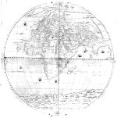

[Wereldkaart in twee halfronden.] Iulius de Musis Venet in aes incidit MDLIIII. [Schaal circa 1:28.000.000, azimutale equidistante projectie.] 8 bladen, kopergravure, diameter van elk halfrond 755 mm. [Venetië,] Michaelis Tramezini formis, 1554. -- (COLLBN 002-05-002.003)
Om de ruimtelijke figuur van de aarde in een plat vlak over te brengen worden verschillende projecties toegepast. Een daarvan is de door Roger Bacon (gestorven in 1294) ontworpen projectie, waarbij de breedtegraden rechte lijnen vormen en op gelijke afstanden van elkaar liggen en de grote cirkels van de meridianen de evenaar in gelijke delen verdelen. Het is in deze door Tramezzino te Venetië uitgegeven wereldkaart, dat deze projectie, afgezien van een kleine houtsnede van Petrus Apianus uit 1524 voor het eerst werd gebruikt. Ook is dit een van de eerste kaarten waarbij voor de afbeelding van de gehele aarde de verdeling in twee halfronden werd toegepast.
Terwijl de talentvolle graveur Julius de Musis en de uitgever Tramezzino in het randschrift wel worden genoemd, ontbreekt de naam van de cartograaf die dit oorspronkelijke werkstuk heeft vervaardigd. De kaart is een eenling zonder navolgingen en zonder aanwijsbare bronnen, en zelfs de grote geograaf Gastaldi heeft er geen invloed op gehad. Door de verdeling van de Oude en Nieuwe Wereld over de twee halfronden toont de kaart op indrukwekkende wijze welke veranderingen zich in de eerste helft van de zestiende eeuw in het geografisch denken hebben voorgedaan. Het Amerikaanse continent heeft zijn eigen plaats op de aardbol gekregen, rondom door oceanen van de Oude Wereld gescheiden. Toch wijzen de aanduidingen in het randschrift van ‘klimata’ en parallellen van uren zonneschijn op de langste dag op enige invloed van de middeleeuwse traditie. Voor de weergave van het centrale gedeelte van de Oude Wereld steunt de kaart voornamelijk op de Ptolemeïsche benamingen en topografie van bergruggen, gebiedsgrenzen, rivieren. Daarbuiten ligt het accent op de kuststreken, waarvoor de auteur zonder enige twijfel Spaanse en Portugese bronnen zal hebben geraadpleegd. Zo is een van de meest recente en ook opvallende gegevens van deze kaart de slingerende Amazone, waarlangs in 1541 een strijdmakker van Francisco Pizarro op zoek naar het Eldorado vanuit Peru naar de monding van de rivier was getrokken.
Literatuur
- F. Muller, Remarkable maps of the XV, XVI and XVII centuries reproduced in their original size. Amsterdam 1894-1897. 6 dln, dl. 1, bl. 1-4.
- A.E. Nordenskiöld, Periplus. An essay on the early history of charts and sailing directions. Stockholm 1897, p. 160, fig. 65, 66.
- R.V. Tooley. ‘Maps in Italian atlases of the sixteenth century’, in: Imago mundi, 3 (1939), p. 12-47, nr. 18.
- The world encompassed. An exhibition of the history of maps. Baltimore 1952, nr. 124.
- Schatten uit de Leidse Bibliotheek. Leiden 1967, nr. 61.
- The Italians and the creation of America. An exhibition [...] prepared by Samuel J. Hough. Providence, R.I. 1980, nr. 112, pl. XXV, XXVI.
- G. Kish, La carte, image des civilisations. Paris 1980, pl. 64.
- R. Shirley, The mapping of the world. Early printed world maps, 1472-1700. London 1983, nr. 97.
| vorige pagina | top pagina |